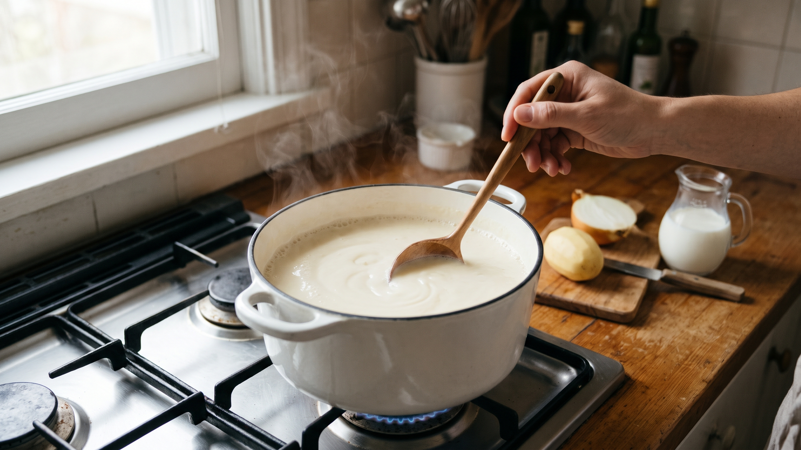

牛乳スープは沸かさない
牛乳を使ったスープを作るとき、温めているうちに表面に薄い膜が張ってしまったことはありませんか。
膜を作りにくくするコツは、具材を先に煮てから火を弱め、牛乳を入れてからは沸騰させないことです。
なぜ表面に膜ができるのか
牛乳を温めると、表面から水分が少しずつ蒸発していきます。そのとき、表面に残った栄養の粒が集まり、周りの油分を巻き込んで固まるためです。
これは、豆乳を温めたときに表面へ「湯葉」ができるのとよく似た仕組みです。混ぜずにそのまま温め続けると、表面の水分が逃げて膜ができやすくなります。
業界団体の案内でも、牛乳を温めるときは、よくかき混ぜながら、沸騰しない程度に温めるのがよいとされています。
家庭での作り方：基本のミルクスープ
日々の料理では、「具材を先にしっかり煮ておく」「牛乳を入れたら弱火で混ぜる」「沸騰する手前で火を止める」の3つを意識します。
材料（2人分）
* じゃがいも：1個（約150g） * 玉ねぎ：1/2個 * 水：200ml * 固形コンソメ：1個 * 牛乳：300ml * 塩・こしょう：少々
作り方
- 具材を煮る
じゃがいもと玉ねぎを薄切りにします。鍋に水、固形コンソメ、切った具材を入れ、中火で10分ほど具材がやわらかくなるまで煮ます。
- 牛乳を加える
火を弱め、牛乳を加えます。
- 混ぜながら温める
膜をできにくくするために、鍋の底からゆっくり混ぜながら温めます。
- ふちがふつふつしたら止める
鍋のふちが小さくふつふつしてきたら火を止め、塩・こしょうで味を調えます。
- 仕上げ
表面に薄い膜ができたときは、おたまで軽く混ぜて全体になじませます。
日常への広がり
この温め方の工夫は、スープ以外の場面でも役立ちます。
* ふたやラップを使う：ホットミルクを温めるときや、温めたスープを置いておくときは、ふたやラップをしておくと水分の蒸発が抑えられ、膜ができにくくなります。 * 酸味のあるものを合わせるとき：牛乳には酸が加わると固まる性質があります。トマトやレモンなどを合わせたいときは、火を止めたあとに少しずつ加えるのが扱いやすくおすすめです。
まとめ
牛乳入りのスープは、「具材を先に煮る」「牛乳を入れたら混ぜながら弱火で温める」「沸騰させずに火を止める」の3つでおいしく仕上がります。今夜のスープ作りから、牛乳を入れたあとの火加減をぜひ試してみてください。
---
参考資料（業界団体の案内）
* 一般社団法人Jミルク「ホットミルクの不思議」（牛乳の温め方と膜ができる仕組みについての解説） * 一般社団法人日本乳業協会「乳と乳製品のQ&A：牛乳のたんぱく質について教えてください。」（牛乳に含まれる成分の性質についての解説） * 一般社団法人Jミルク「牛乳は胃の中で固まるので消化が悪い」（牛乳が酸によって固まる性質についての解説）